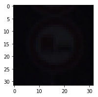
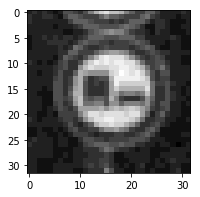

The steps of this project are the following:
Here I will consider the rubric points individually and describe how I addressed each point in my implementation. Here is a link to my project code
As per requirement, executed all code blocks in the iPython Notebook and then converted the notebook to HTML File with appropriate results.
In order to explore the dataset, in addition to the existing general summary of the dataset (number of training samples, number of validation samples, number of test samples, and shape of the samples), I have generated number of samples in each classification (class ID) to visualize the distribution of data. Finally, I have displayed a random image along with its sign name to confirm the pipeline is working as expected.
Here is the summary of the dataset, which is extracted in code cell #2, using basic length and shape extractions methods.
Training Set: 34799 samples
Validation Set: 4410 samples
Test Set: 12630 samples
Image data shape = (32, 32, 3)
Number of classes = 43With the help of numpy library, I have counted total number of occurrences of the each classID and then translated the class ID to traffic sign name. Using pandas library, here I have defined a method get_name_from_id
in code cell #3, which returns traffic sign name for a given classID. It is evident in the distribution that, there are few classes that have significantly larger samples when compared to others. This could potentially lead to biased learning; however, since I had achieve good results without data augmentation, I did not have to take any measure to uniformly distribute the samples (e.g., data augmentation).
Id = 0 -- Count= 180 -- Name: Speed limit (20km/h)
Id = 1 -- Count= 1980 -- Name: Speed limit (30km/h)
Id = 2 -- Count= 2010 -- Name: Speed limit (50km/h)
Id = 3 -- Count= 1260 -- Name: Speed limit (60km/h)
Id = 4 -- Count= 1770 -- Name: Speed limit (70km/h)
Id = 5 -- Count= 1650 -- Name: Speed limit (80km/h)
Id = 6 -- Count= 360 -- Name: End of speed limit (80km/h)
Id = 7 -- Count= 1290 -- Name: Speed limit (100km/h)
Id = 8 -- Count= 1260 -- Name: Speed limit (120km/h)
Id = 9 -- Count= 1320 -- Name: No passing
Id = 10 -- Count= 1800 -- Name: No passing for vehicles over 3.5 metric tons
Id = 11 -- Count= 1170 -- Name: Right-of-way at the next intersection
Id = 12 -- Count= 1890 -- Name: Priority road
Id = 13 -- Count= 1920 -- Name: Yield
Id = 14 -- Count= 690 -- Name: Stop
Id = 15 -- Count= 540 -- Name: No vehicles
Id = 16 -- Count= 360 -- Name: Vehicles over 3.5 metric tons prohibited
Id = 17 -- Count= 990 -- Name: No entry
Id = 18 -- Count= 1080 -- Name: General caution
Id = 19 -- Count= 180 -- Name: Dangerous curve to the left
Id = 20 -- Count= 300 -- Name: Dangerous curve to the right
Id = 21 -- Count= 270 -- Name: Double curve
Id = 22 -- Count= 330 -- Name: Bumpy road
Id = 23 -- Count= 450 -- Name: Slippery road
Id = 24 -- Count= 240 -- Name: Road narrows on the right
Id = 25 -- Count= 1350 -- Name: Road work
Id = 26 -- Count= 540 -- Name: Traffic signals
Id = 27 -- Count= 210 -- Name: Pedestrians
Id = 28 -- Count= 480 -- Name: Children crossing
Id = 29 -- Count= 240 -- Name: Bicycles crossing
Id = 30 -- Count= 390 -- Name: Beware of ice/snow
Id = 31 -- Count= 690 -- Name: Wild animals crossing
Id = 32 -- Count= 210 -- Name: End of all speed and passing limits
Id = 33 -- Count= 599 -- Name: Turn right ahead
Id = 34 -- Count= 360 -- Name: Turn left ahead
Id = 35 -- Count= 1080 -- Name: Ahead only
Id = 36 -- Count= 330 -- Name: Go straight or right
Id = 37 -- Count= 180 -- Name: Go straight or left
Id = 38 -- Count= 1860 -- Name: Keep right
Id = 39 -- Count= 270 -- Name: Keep left
Id = 40 -- Count= 300 -- Name: Roundabout mandatory
Id = 41 -- Count= 210 -- Name: End of no passing
Id = 42 -- Count= 210 -- Name: End of no passing by vehicles over 3.5 metric tonsIn the following code cell (#4), with the help of matplot library and previously developed get_name_from_id()
method, I have randomly selected an image and its associated sign name to confirm that my visualization and data extraction pipeline is working as expected. For ease of comparison, I have presented the result of this cell in the next section where I show processed image along with the original image obtained in this code cell.
In this step, first the images were preprocessed, then the model architecture was defined, and finally the model was trained using the images. In order to achieve minimum specified validation accuracy those tuning and retuning exercise has taken place in all the three steps. Following are brief discussion of the develop
In this step, first I have reduced color channel of the images (in all three data sets) from RGB to grayscale, essentially to make computation faster and at the same time make the image-shape compatible with my model input (input of my model is with 32x32x1). I do that in code cell #5, where I have defined a simple rgb to gray scale conversion method with the help of cv2 library and then shaping the image to 32x32x1.
Second, I have normalized the images so that model can converge to a solution with less numerical complexity. Again I have defined a simple method (thanks to lecture examples) in code cell #6 which normalizes images to -1.0 to 1.0. I found normalizing using range [-1.0, 1.0] instead of [0.1 - 0.9] deals with image brightness better and accordingly increases the accuracy of the model.
Finally, I have placed a visualization code in the same code cell (#6), to graphically observe the preprocessing results. Here I have displayed the same image randomly picked in code cell #4. Below is an example side-by-side comparison of original image and processed image.
 
Note: Though the image on the left looks black, but its actually an RGB image with poor brightness and contrst, and it is evident that preprocessing is doing a decent job by screening out the information of the image
As part of the preprocessing, I also suffle the training dataset in code cell #7, essentially this will help to reduce biasness during learning epochs.
Next in code cell #9, the network is defined. The network is primarily based on the Convolutional Neural Network (CNN) model, named ‘LeNet’ model introduced in classroom lectures, with few adjustments to adopt to this application. Essentially, the network has five layers with two droput points. The size of the layers and its associated filter size is presented in the following table. The placeholder for the input dataset (x and y) and dropout hyperparameter of the network is defined in code cell #10.
| Layers | Description |
|---|---|
| Input | 32x32x1 Grayscale Image |
| Layer - 1: Convolution with 5x5x1 filter | 1x1 Stride, valid padding, output 28x28x6 |
| RELU | |
| Max pooling with 2x2 ksize | 2x2 stride, valid padding, outputs 14x14x6 |
| Layer - 2: Convolution with 5x5x6 filter | 1x1 Stride, valid padding, output 10x10x16 |
| RELU | |
| Max pooling with 2x2 ksize | 2x2 stride, valid padding, outputs 5x5x6 |
| Flatten | Flat from 5x5x16 to 400 |
| Layer - 3: Fully Connected | From 400 to 120 |
| RELU | |
| Dropout | |
| Layer - 4: Fully Connected | From 120 to 64 |
| RELU | |
| Dropout | |
| Layer - 5: Fully Connected | From 84 to 43 |
In order to train the model, the batch size and the number of epochs are tuned as 128 and 30 respectively in code cell #8. At each epoch the training dataset is shuffled and then fed to the optimizer is batches of 128, to perform the traning operation. The optimizer calculates the logits and its associated entropy, and then calculates the loss to minimize it. Here, I have selected Adam Optimizer for this operation with a learning rate of 0.001. The traning operation is defined in code cell #11. In order to prevent model from overfitting, I have added L2_loss term (regularization component) to mean cross entropy, which is the total loss for that pass. The associated hyperparameter (beta) is set to 0.001 in code cell #9.
In each epoch, as soon as the model is trained with full training data, both accuracy of traning and accuracy of validation are evaluated to check the performance at that epoch. Accordingly, this is repeated for next 29 epochs. The training loop can be found in code cell #13. Evaluation operation takes place by comparing the output/logits of the network (using the best tuned weights and bias) with the actual/true classification. Similar to training operation, evaluation operation also takes place in batches (if the input is larger than batch), and the average of accuracy is reported by the evaluation method. The associated code can be found in code cell #12.
Here the hyperparamters are tabulated for ease of reader:
| Parameter | Value | Notation (name in code) |
|---|---|---|
| Learning rate | 0.001 | \(\eta\) (rate) |
| Number of Epochs | 30 | EPOCHS |
| Batch size at each ephoch | 128 | BATCH_SIZE |
| Mean for Normal Dist. of W | 0 | \(\mu\) (mu) |
| Std. Deviation | 0.075 | \(\sigma\) (sigma) |
| Regularization Parameter | 0.001 | \(\beta\) (beta) |
My approach to meet specified >93% validation accuracy was mostly a trial and error. In order to tune model hyperparameters and adjust the model itself, I have leveraged my knowlege on what to do to improve model accuracy and what kind of issue model can experience in various combination of accuracy numbers.
I have started with the LeNet model that was introduced in classroom to indetify MNIST handwritten characters. My rationale is, traffic sign identification is fundamentally an image classification problem, which I believe is similar to MNIST character recognition problem that looks into an image and classifies/identifies it from a finite sample of class IDs.
However, with the exact LeNet model, both training accuracy and validation accuracy in predicting traffic sign was poor, which suggested me an possible underfitting issue, so first, I started tweaking the hyperparameters and processing input data until I have reached to a point where the training accuracy was good (~99%) within a reasonable number of epochs (~10). I have preprocessed the image by converting it to grayscale and then normalizing. My initial image normalization was ranged between 0.1 - 0.9, but changing it to -1.0 to 1.0 improved the result. I have also reduced sigma from 1.0 to 0.075.
Finally the model started achieving good ‘training accuracy’ (also fast) but the validation accuracy was poor, which suggested me overfitting issue, so I started introducing dropout and l2 regularization. Finally, with few iterations of the dropout and loss hyperparameter, I have managed to achieve the following resutls in 30 epochs:
| Tested Data Set | Prediction Accuracy |
|---|---|
| Training set | 99.6% |
| Validation set | 96.1% |
| Test set | 93.3% |
Given the non-uniform distribution of the traning dataset and relatively small number of training epochs, I believe, the adjusted LeNet model is working well in predicting test dataset of traffic sign. Though there are room for improvements beyond the model architecture; for example, data augmentation to make the uniform distribution of input data, splitting 20% of traning data as validation data so that model does not start traning the given validation dataset, and of-course exploring different CNN network; however, I have deferred them for future effort and focused mostly on a total machine learning pipeline using CNN.
In this step, as per requirement I have downloaded five German traffic signs from web and tested the model on them. Here I had to first prepare the image to make it compatible with the model input node shape.
Using gimp tool, first I have cropped the dowaloaded image to focus only on the traffic sign portion of the image and then exported it as .png file. Next I have created a .csv file that records the downloaded traffic sign name and its associated classification. Interestingly, the downloaded image comes in BGR channel as opposed to RGB channel, so I converted them to RGB and then shaped them to 32x32x3 in code cell #15. Here are the original images after cropping only.
*Images are collected from web
In the following step, the images were preprocessed with the same preprocessing routine that was applied on the training dataset. Code cell #15 and code cell #16 shows the grayscale coversion and normalizing procedure respectively.
Images after reshaping:


And after grayscale conversion and normalization:


The images are then tested with the model to predict the class (or traffic sign ID). I have evaluated the online images in code cell #17, by passing the logits to tensorflow.argmax(logits).eval() function, which returns the predicted class ID of the input image. Surprisingly, the model have accurately predicted all five images, leading to a 100% accuracy of prediction. Here is the summary of prediction:
| Image | Prediction |
|---|---|
| Speed limit (30km/h) | Speed limit (30km/h) |
| Yield | Yield |
| Stop | Stop |
| No entry | No entry |
| Road work | Road work |
The accuracy of the outcome is evaluated in code cell #18 using previously defined ‘evaluate accuracy’ method.
Now, to understand better how confidently the model have predicted the traffic signs, the top five softmax probabilites for each image are extracted in code cell #19. Here tensorflow.nn.top_k method has been utilized to extract the information. For improved visulazation of the the probabilites, bar charts have been created in code cell #21. In order to generate the bar chart, I had to convert the softmax class id array into sign name array, which can be found in code cell #20. Here are the top 5 probability distitbution as predicted by the model.


As we see, except for ‘stop sign’ the model was almost 100% confident in evaluting the rest of the images. It was only 60% confident about stop sign being a stop sign, while suspecting ‘ahead only’ sign with 25% confidence (see appendix for numbers). This suggests me that, the prediction result is biased by images of ‘Ahead Only’ (id - 35) sign, which is also evident in the image distribution in training dataset as presented earlier in this writeup. I believe, data augmentation can result in improved confidence in such scenario, thereby improving the overall accuracy of the model beyond what is reported in this writeup.
Topmax probabilty numbers for reference.
Top five topmax probabilites of german traffic signs found on web:
[[ 9.99999523e-01 4.43674679e-07 3.11366492e-12 1.71460339e-12 1.40853941e-12]
[ 1.00000000e+00 2.55283381e-12 3.13366378e-14 2.54277664e-14 7.02968525e-15]
[ 5.92689216e-01 1.49673149e-01 4.98649850e-02 4.93375361e-02 4.56691384e-02]
[ 9.99999762e-01 2.48646245e-07 2.88019759e-08 1.07460414e-08 3.67510355e-09]
[ 9.99999762e-01 2.60950316e-07 1.71834352e-11 4.61139937e-12 6.27848305e-13]]
Corresponding label ID:
[[ 1 2 4 38 5]
[13 15 12 35 14]
[14 35 33 13 25]
[17 40 9 14 33]
[25 11 20 18 30]]